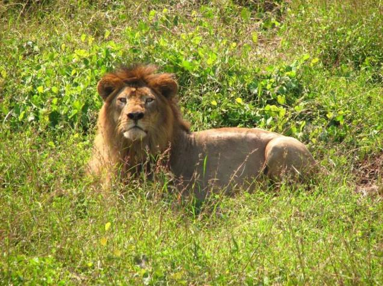

Marina Beach: Situated in the city of Chennai in Tamil Nadu, Marina Beach is a natural urban beach along the Bay of Bengal.
The beach is stretched out to a distance of 13 kilometres making it the longest natural urban beach in the country,
second largest in the world and also the most crowded beach in India with almost 30,000 visitors a day.
Weather : 26° C
Timings : Throughout the day
Time Required : 2-3 hrs
Entry Fee : Free

Arignar Anna Zoological Park: One of the most popular picnic spots in Vandalur, the Arignar Zoological Park is an amazing place to discover the flora and fauna of the region.
A favourite weekend spot with both children and adults alike, the Arignar Zoo is situated at a distance of 32 kilometres from Chennai city.
It is the largest zoo of its kind in South East Asia and is sprawled over an area of 1260 acres.
Weather : 26° C
Timings : 9:00 AM - 5:00 PM(closed on Tuesdays)
Time Required : 3-4 hrs
Entry Fee : Adults- INR 50 Children below 2 years : Free Children aged 2-12 years : INR 20 Cameras : INR 25 Zoo round (Adult): INR 100 Zoo round (Child): INR 50